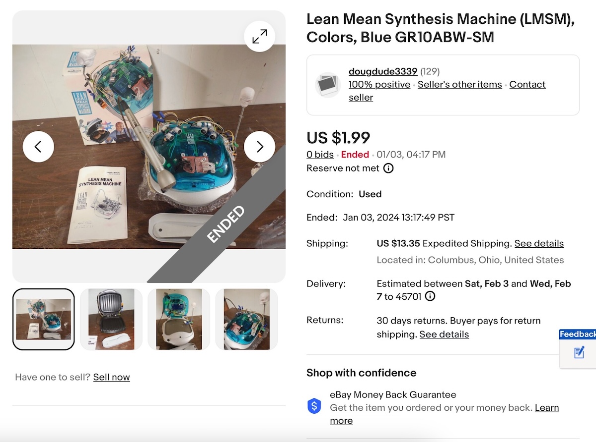
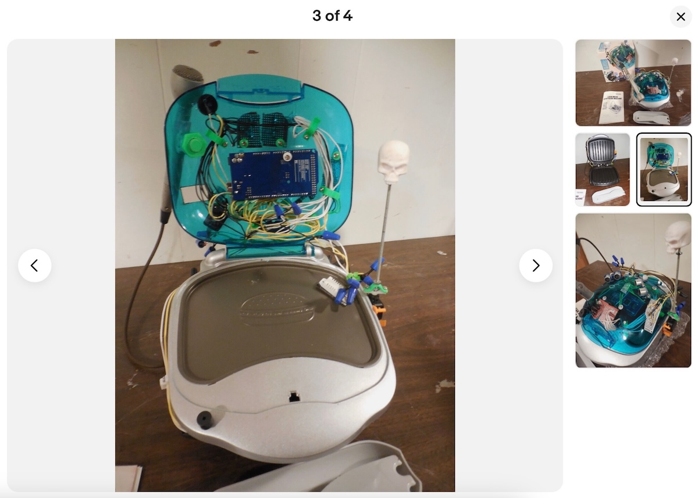
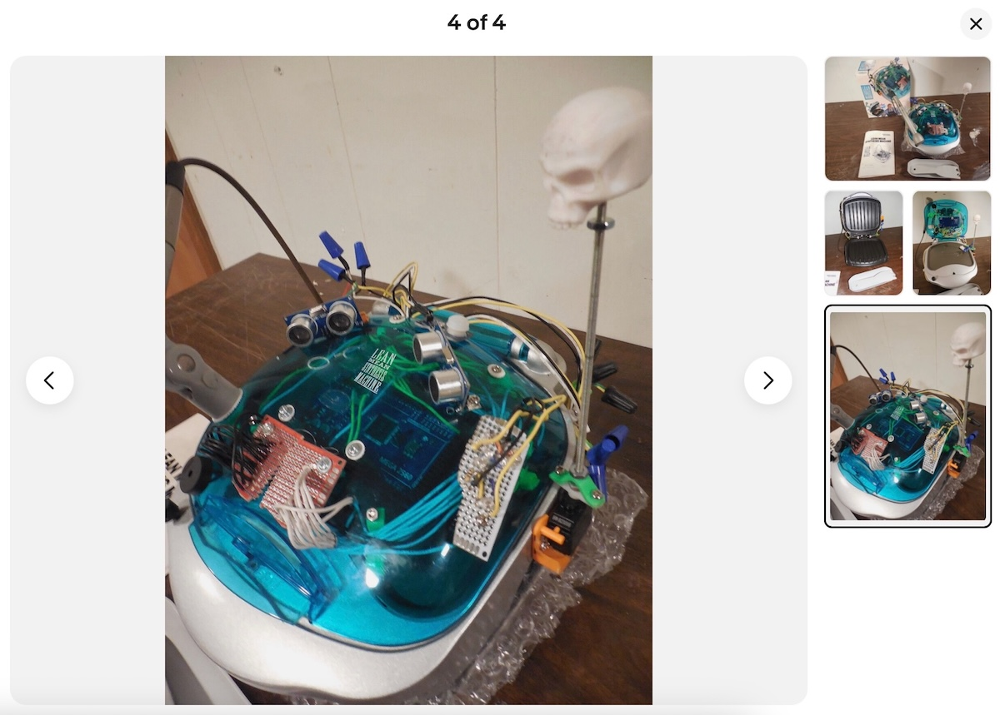
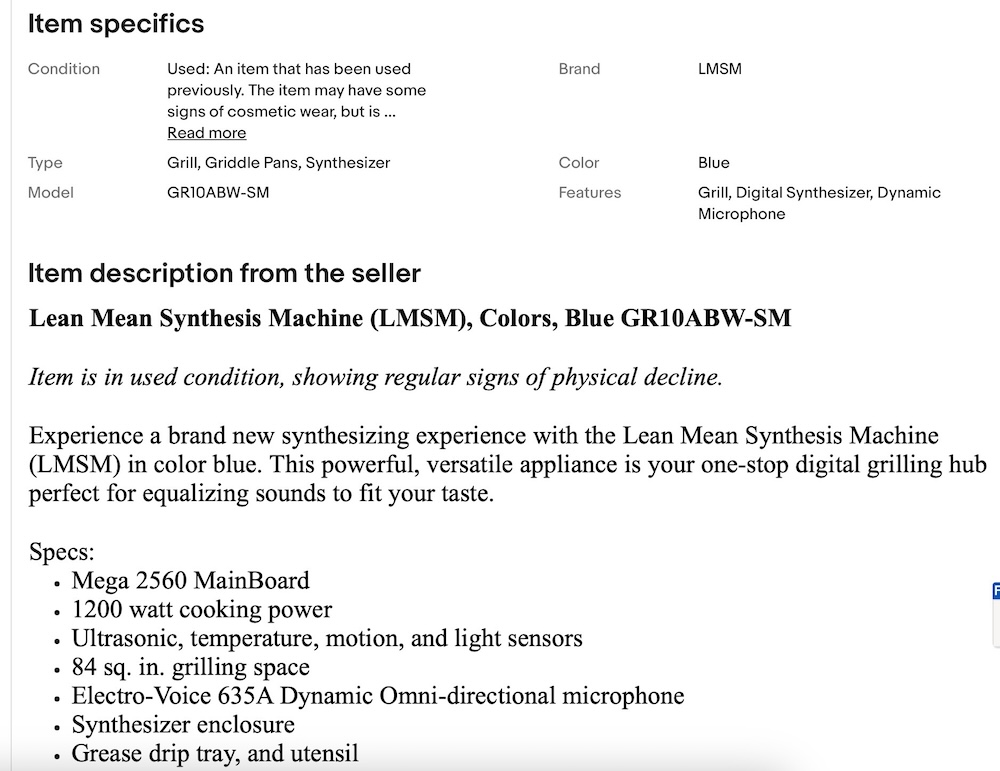
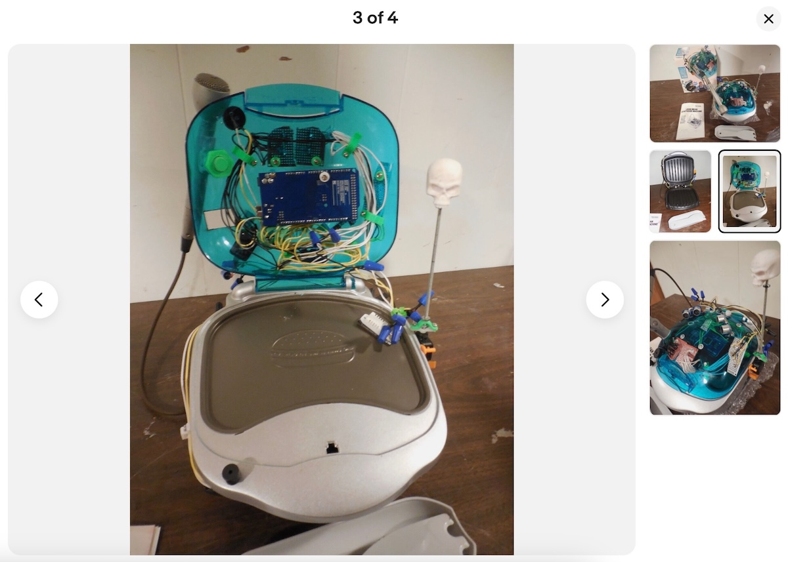
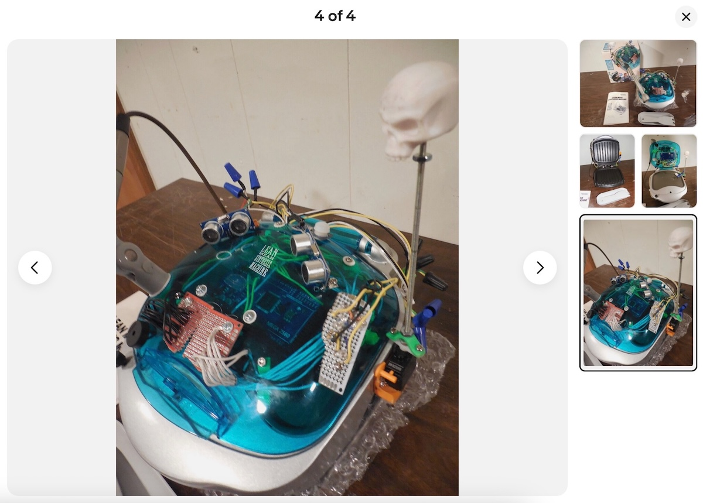
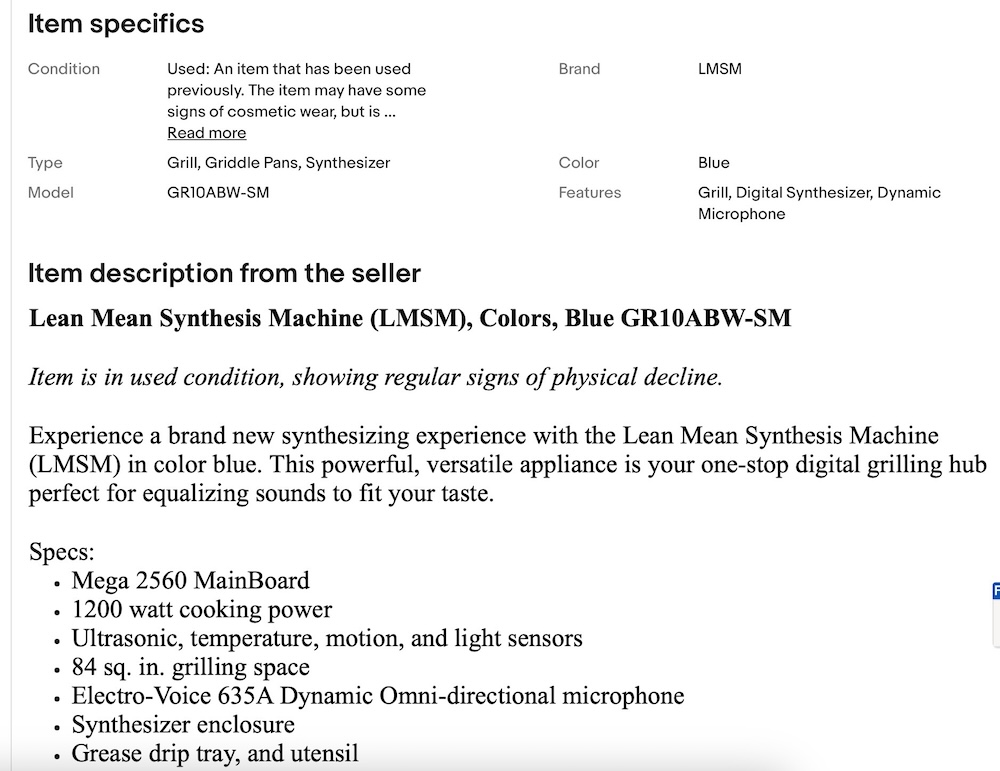

Lean Mean Synthesis Machine (LMSM), Colors, Blue GR10ABW-SM
Year: 2023
Specs:
George Foreman Colors Grill
Arduino Mega Microprocessor
6 data collecting sensors
Piezos
Microphone
A George Foreman synthesizer posted, and not sold on eBay

 




